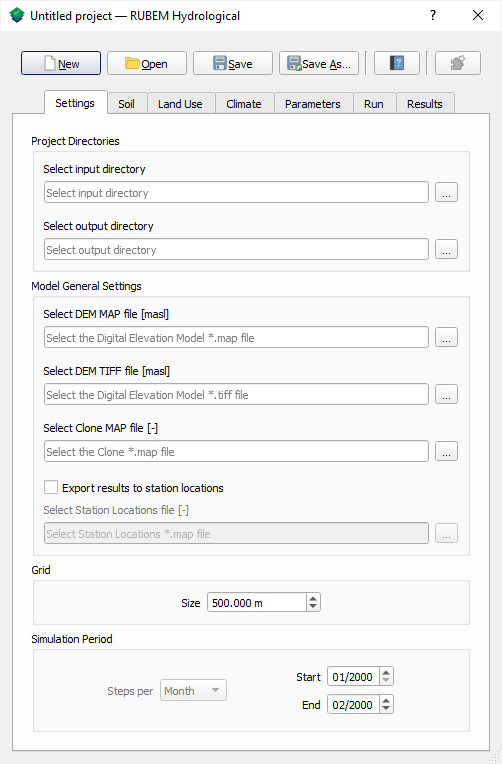
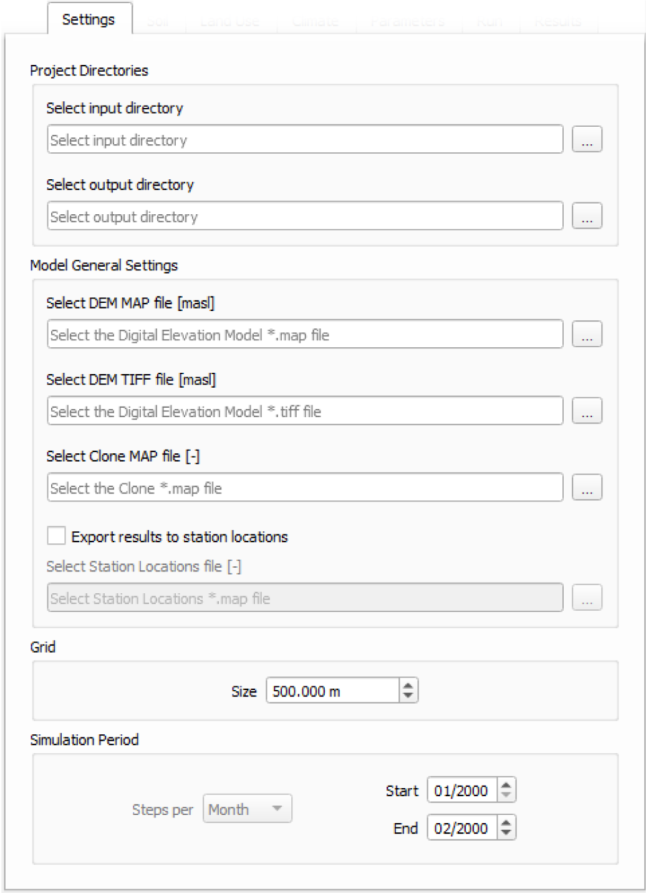
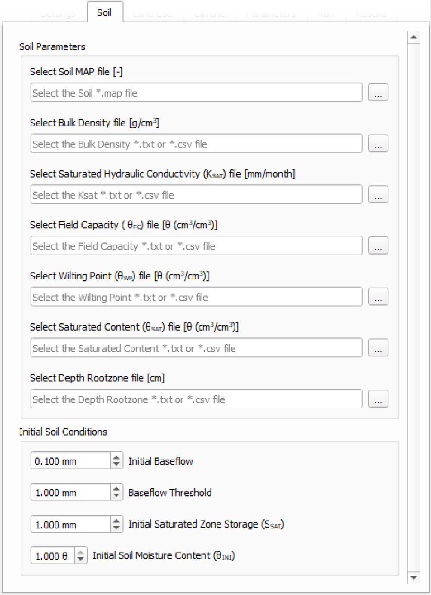
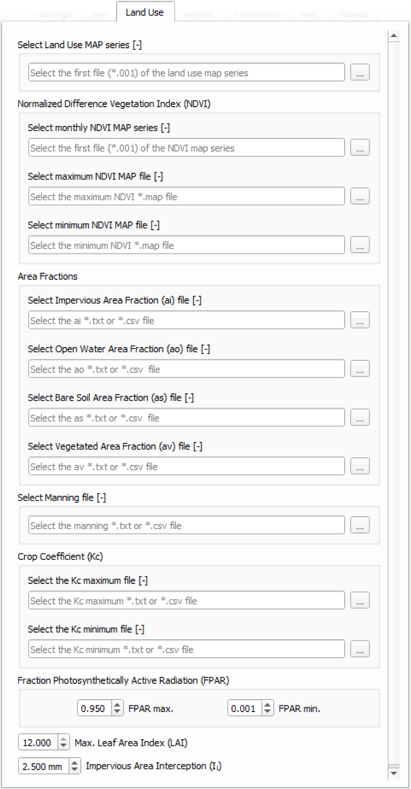
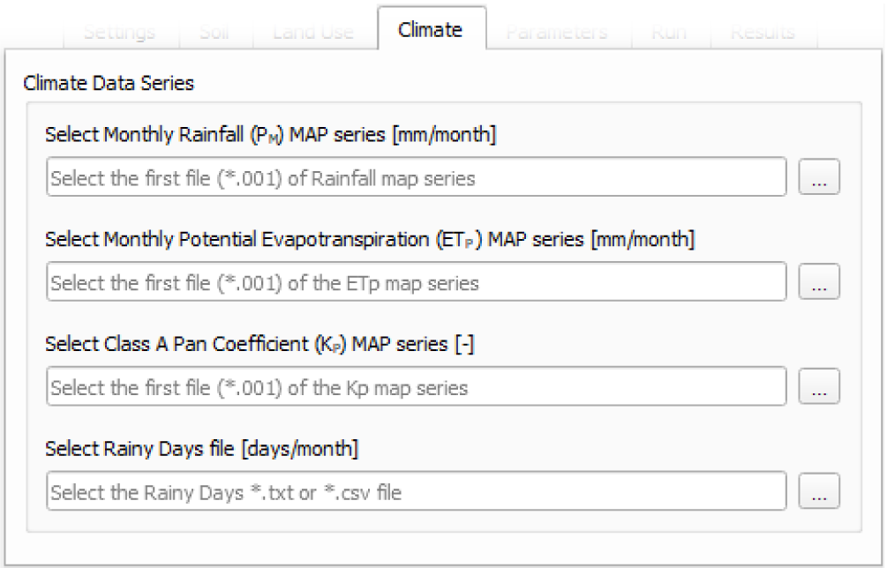
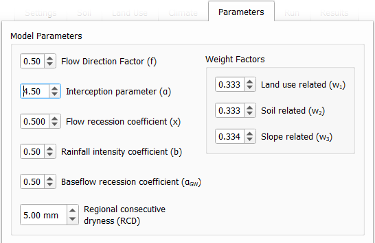
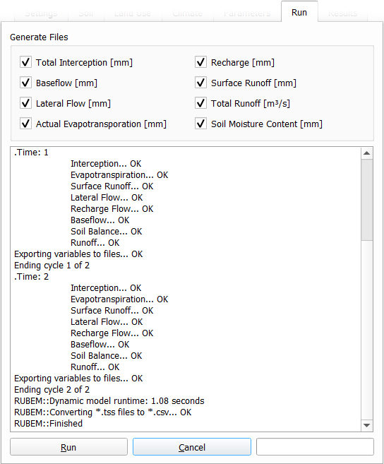
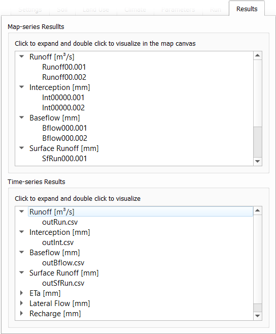
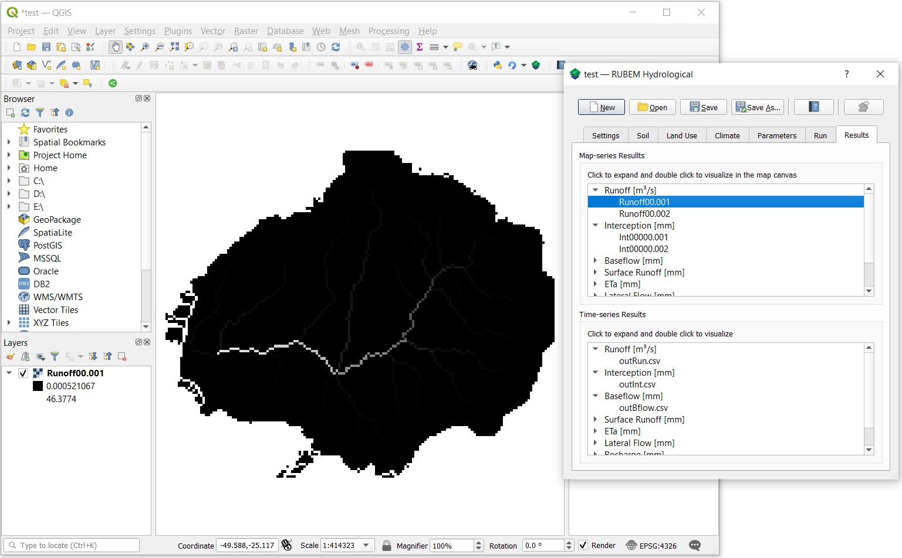
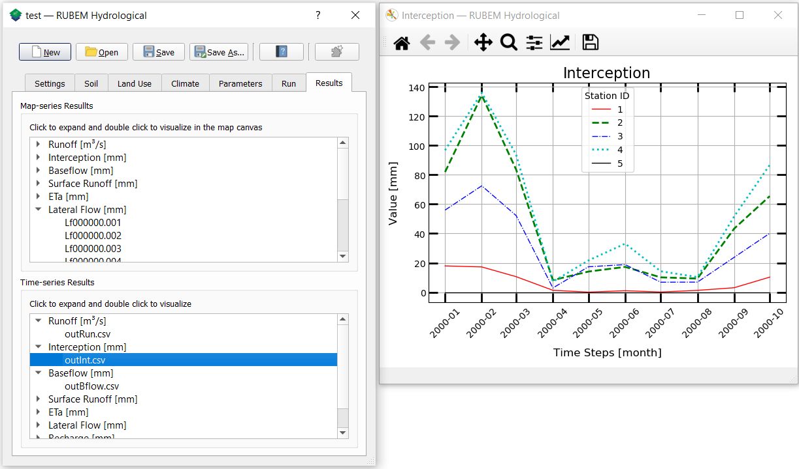

User Guide
Running RUBEM Hydrological
When running RUBEM Hydrological, you will see a dialog with project management buttons, help information, plugin information at the top, and tabs with text fields. Each text field contains a tooltip inside it in grayed-out text that will disappear when you start typing text into it. There is also a tool tip containing help information that will appear when you hover over each text field:
The descriptions give you a hint about what is required for each field. Also, in the upper right field of the window’s title bar there is a question mark button that triggers the “What’s this” mode, point the mouse pointer to any element to get more information about it. The following sections describe the required and optional parameters in greater detail.
Settings tab
{kind=link}
Project Directories
Data Input Directory: Mandatory path to database folder. Must be a valid path to an existing directory;
Data Output Directory: Mandatory path to output folder. Must be a valid path to an existing empty directory.
Model General Settings
Digital Elevation Map (DEM): Mandatory path to Digital Elevation Map (DEM) file [masl] in *.map format. This map contains topographic ground elevation in meters. Must be a valid file path to a *.map raster file;
Digital Elevation Map (DEM): Mandatory path to Digital Elevation Map (DEM) file [masl] in TIF format. This map contains topographic ground elevation in meters. Must be a valid file path to a TIF raster file;
Mask of Catchment (Clone): Mandatory path to Mask of Catchment (Clone) file in *.map format. This map defines the basin area to simulate in the model. Must be a valid file path to a *.map (PCRaster boolean format) raster file;
Export Results to Station Locations: Optional, If enabled, export time series data of selected output variables (*.csv files) for each valid pixel in stations maps. A station location map file must be defined;
Stations Locations (Samples): Mandatory if
Export Results to Station Locationsis enabled. Path to Stations file in *.map and nominal format. This file is a nominal map with unique Ids for cells identified as being a location where time-series output is required. Non-station cells have a value of -9999. Must be a valid path to an existing *.map file.
Grid
Grid: Mandatory cell dimension value in meters. Value has to correspond to pixel resolution of the dataset’s maps.
Simulation Period
Start Date: Mandatory date of the first time step of the simulation scenario (month and year of the start period of simulation scenario);
End Date: Mandatory date of the last time step of the simulation scenario (month and year of the last period of simulation scenario).
Both dates must be valid and fall within between the time period of the dataset input time scale. End date must be greater than the start date.
Soil tab
{kind=link}
Soil Parameters
Soil Map: Mandatory path to Soil map in *.map and nominal format. It represents the soil classes of the study area, the number of classes are defined by the user and are related to hydraulic properties. Must be a valid path to an existing *.map file.
Bulk Density: Mandatory path to a tabular file with values [g/cm3] of Bulk density for each soil class. Must be a valid path to an existing *.txt or *.csv file.
Saturated Hydraulic Conductivity (KSAT): Mandatory path to a tabular file with values [mm/month] of saturated hydraulic conductivity for each soil class. Must be a valid path to an existing *.txt or *.csv file.
Field Capacity (θFC): Mandatory path to a tabular file with values [θ (cm3/cm3)] of field capacity water content (θ) for each soil class. Must be a valid path to an existing *.txt or *.csv file.
Wilting Point (θWP): Mandatory path to a tabular file with values [θ (cm3/cm3)] of Wilting Point for each soil class. Must be a valid path to an existing *.txt or *.csv file.
Saturated Content (θSAT): Mandatory path to a tabular file with values [θ (cm3/cm3)] of saturated content for each soil class. Must be a valid path to an existing *.txt or *.csv file.
Depth Rootzone: Mandatory path to a tabular file with values [cm] of depth rootzone for each soil class. Must be a valid path to an existing *.txt or *.csv file.
Initial Soil Conditions
Initial Baseflow: Mandatory float value [mm] representing the baseflow at the beginning of the simulation. It can be set by the rate of the flow in [L3T] and the grid cell dimension [L].
Baseflow Threshold: Mandatory float value [mm] representing te minimum water store in the saturated zone for generating Baseflow. It can be set by the rate of the monthly mean flow in [L3T] (from stream gauge) and the grid cell dimension [L] at dry season.
Initial Soil Moisture Content (θINI): Mandatory float value [θ (cm3/cm3)] representing the Rootzone Soil Moisture Content value at the beginning of the simulation.
Initial Saturated Zone Storage (SSAT): Mandatory Saturated zone Moisture Content value [mm] at the beginning of the simulation. To generate Baseflow at the initial step this value must be greater than the baseflow threshold.
Land Use tab
{kind=link}
Land Use Map-series: Mandatory path to Land use map-series format (something like luc00000.001). The directory containing this file must contain the maps that represent the mean monthly LUC, where each map represents the value of the variable at an individual time step. If any raster file from the time series is missing, the raster file from the previous step will be used instead. Must be a valid path to an existing *.001 MAP file.
Note
The map-series consists of a spatial map for each time-step in the model. This means if the model has 100 monthly time-steps, 100 maps of land use are mandatory.
A map-series in PCRaster always starts with the *.001 extension, corresponding with the start date of your model simulation period. According to PCRaster documentation the name of each of the files in the series should have eight characters before the dot, and 3 characters after the dot. The name of each map starts with a prefix, and ends with the number of the time step. All characters in between are filled with zeroes.
Manning’s Roughness Coefficient: Mandatory path to a tabular file with values of Manning’s roughness coefficient for each land use class. Must be a valid path to an existing *.txt or *.csv file.
Maximum Leaf Area Index (LAIMAX): Mandatory maximum float value [dimensionless quantity] that characterizes plant canopies. It is defined as the one-sided green leaf area per unit ground surface area.
Impervious Area Interception (II): Mandatory float value [mm] that represents the rainfall interception in impervious areas.
Normalized Difference Vegetation Index (NDVI)
NDVI Map-series: Mandatory path to the first file of the monthly Normalized Difference Vegetation Index (NDVI) map-series format (something like ndvi0000.001). The directory containing this file must contain the maps that represent the mean monthly NDVI, where each map represents the value of the variable at an individual time step. If any raster file from the time series is missing, the raster file from the previous step will be used instead. Must be a valid path to an existing *.001 MAP file.
Note
The map-series consists of a spatial map for each time-step in the model. This means if the model has 100 monthly time-steps, 100 maps of NDVI are mandatory.
A map-series in PCRaster always starts with the *.001 extension, corresponding with the start date of your model simulation period. According to PCRaster documentation the name of each of the files in the series should have eight characters before the dot, and 3 characters after the dot. The name of each map starts with a prefix, and ends with the number of the time step. All characters in between are filled with zeroes.
Maximum NDVI Map: Mandatory path to maximum NDVI file in *.map format. This file is a scalar pcraster map with values for each cell, representing the maximum value of NDVI in the historic series available for the cell. Must be a valid path to an existing *.map file.
Minimum NDVI Map: Mandatory path to minimum NDVI file in *.map format. This file is a scalar pcraster map with values for each cell, representing the minimum value of NDVI in the historic series available for the cell. Must be a valid path to an existing *.map file.
Area Fractions
Impervious Area Fraction (ai): Mandatory path to file with values of fraction of impervious surface area for each land use class. This file is a *.txt or *.csv file with values, representing the fraction of impervious surface area for each land use class. Must be a valid path to an existing *.txt or *.csv file.
Open Water Area Fraction (ao): Mandatory path to file with values of fraction of open-water area for each land use class. This file is a *.txt or *.csv file with values, representing the fraction of open-water area for each land use class. Must be a valid path to an existing *.txt or *.csv file.
Bare Soil Area Fraction (as): Mandatory path to file with values of fraction of bare soil area for each land use class. This file is a *.txt or *.csv file with values, representing the fraction of bare soil area for each land use class. Must be a valid path to an existing *.txt or *.csv file.
Vegetated Area Fraction (av): Mandatory path to file with values of fraction of vegetated area for each land use class. This file is a *.txt or *.csv file with values, representing the fraction of vegetated area for each land use class. Must be a valid path to an existing *.txt or *.csv file.
Crop Coefficient (KC)
Maximum (KC): Mandatory path to a tabular file with values of maximum crop coefficient for each land use class. Must be a valid path to an existing *.txt or *.csv file.
Minimum (KC): Mandatory path to a tabular file with values of minimum crop coefficient for each land use class. Must be a valid path to an existing *.txt or *.csv file.
Fraction Photosynthetically Active Radiation (FPAR)
Maximum FPAR: Mandatory maximum float value [dimensionless quantity] of fraction photosynthetically active radiation. This parameter is related to the maximum Leaf Area Index and allows to calculate de canopy storage.
Minimum FPAR: Mandatory minimum float value [dimensionless quantity] of fraction photosynthetically active radiation. This parameter is related to the minimum Leaf Area Index and allows to calculate canopy storage.
Climate tab
{kind=link}
Climate Data Series
Note
The map-series consists of a spatial map for each time-step in the model. This means if the model has 100 monthly time-steps, 100 maps of rainfall/ETP/KP are mandatory.
A map-series in PCRaster always starts with the *.001 extension, corresponding with the start date of your model simulation period. According to PCRaster documentation the name of each of the files in the series should have eight characters before the dot, and 3 characters after the dot. The name of each map starts with a prefix, and ends with the number of the time step. All characters in between are filled with zeroes.
Monthly Rainfall (PM): Mandatory path to the first file [mm/month] of the Monthly Rainfall map-series format (something like pm000000.001). The directory containing this file must contain the maps that represent the mean monthly PM, where each map represents the value of the variable at an individual time step. If any raster file from the time series is missing, the raster file from the previous step will be used instead. Must be a valid path to an existing *.001 MAP file.
Monthly Potential Evapotranspiration (ETP): Mandatory path to the first file [mm/month] of the Monthly Potential Evapotranspiration map-series format (something like etp00000.001). The directory containing this file must contain the maps that represent the mean monthly ETP, where each map represents the value of the variable at an individual time step. If any raster file from the time series is missing, the raster file from the previous step will be used instead. Must be a valid path to an existing *.001 MAP file.
Class A Pan Coefficient (KP): Mandatory path to the first file of the Class A Pan Coefficient map-series format (something like kp000000.001). The directory containing this file must contain the maps that represent the mean monthly KP, where each map represents the value of the variable at an individual time step. If any raster file from the time series is missing, the raster file from the previous step will be used instead. Must be a valid path to an existing *.001 MAP file.
Monthly Rainy Days: Mandatory path to a tabular file [days/month] with values representing the mean value of rainy days for each month of the simulation period. Must be a valid path to an existing *.txt or *.csv file.
Parameters tab
Model Parameters
Interception Parameter (α): Mandatory float value [dimensionless quantity] that affects the daily interception threshold that depends on land use.
As surface runoff is directly related to interception an optimal value can be obtained by calibration surface runoff against direct runoff separated from streamflow observations.
Rainfall Intensity Coefficient (b): Mandatory float exponent value [dimensionless quantity] that represents the effect of rainfall intensity in the runoff.
The value is higher for low rainfall intensities resulting in less surface runoff, and approaches to one for high rainfall intensities. If \(b = 1\), a linear relationship is assumed between rainfall excess and soil moisture.
Regional Consecutive Dryness Level (RCD): Mandatory float value [mm] that incorporates the intensity of rain and the number of consecutive days in runoff calculation.
Where \(RCD = 1.0\) can be used for very heavy or torrential rainfall and more than 10 consecutive rainy days/month, and \(RCD = 10.0\) for low regional intensity rainfall less than 2 consecutive rainy days per month.
Flow Direction Factor (f): Mandatory float value [dimensionless quantity] used to partition the flow out of the root zone between interflow and flow to the saturated zone.
Where \(f = 1.0\) corresponds to a 100% horizontal flow direction, and \(f = 0\) corresponds to a 100% vertical flow direction.
Baseflow Recession Coefficient (αGW): Mandatory float value [dimensionless quantity] that relates the baseflow response to changes in groundwater recharge.
Lower values for \(\alpha_{GW}\) therefore correspond to areas that respond slowly to groundwater recharge, whereas higher values indicate areas that have a rapid response to groundwater recharge.
Flow Recession Coefficient (x): Mandatory float value [dimensionless quantity] that incorporates a flow delay in the accumulated amount of water that flows out of the cell into its neighboring downstream cell.
Where \(x \approx 0\) corresponds to a fast responding catchment, and \(x \approx 1\) corresponds to a slow responding catchment.
Weight Factors
Land Use Factor Weight (w1): Mandatory float value [dimensionless quantity] that contributes to the calculation of permeables areas runoff, and is related to Manning coefficient for each land use class. It measures the effect of the land use in the potential runoff produced.
Soil Factor Weigh (w2): Mandatory float value [dimensionless quantity] that contributes to the calculation of permeables area runoff, and is related to wilting points for each soil class. It measures the effect of the soil class in the potential runoff produced.
Slope Factor Weight (w3): Mandatory float value [dimensionless quantity] that contributes to the calculation of permeables areas runoff, and is related to pixel slope. It measures the effect of the slope in the potential runoff produced.
\(w_1\), \(w_2\) and \(w_3\) are the weight factors for the three components contributing to the runoff coefficient for permeable areas, used in surface runoff formulation. Their sum must be equal to 1.
Run tab
Generate Files
Warning
At least one of the checkboxes that enable the generation of raster series of output variables must be enabled.
Note
If Export Results to Station Locations option is enabled and a valid Stations Locations (Samples) raster is provided, a *.csv file will be generated for each of the enabled variables with the respective data of the values of each station for each one of the months of the simulation period.
Total Interception: Optional boolean value. If enabled, this option allows to generate or not the results maps of Total Interception (ITP) [mm] in raster format for all simulation period and/or *.csv for each pixel of the station’s map.
Baseflow: Optional boolean value. If enabled, this option allows to generate or not the results maps of Baseflow (BFW) [mm] in raster format for all simulation period or *.csv for each pixel of the station’s map.
Surface Runoff: Optional boolean value. If enabled, this option allows to generate or not the results maps of Surface runoff (SRN) [mm] in raster format for all simulation period or *.csv for each pixel of the station’s map.
Actual Evapotranspiration: Optional boolean value. This option allows to generate or not the results maps of Actual Evapotranspiration (ETA) [mm] in raster format for all simulation period or *.csv for each pixel of the station’s map.
Lateral Flow: Optional boolean value. This option allows to generate or not the resulting maps of Lateral Flow (LFW) [mm] in raster format for all simulation period or .csv for each pixel of the station’s map.
Recharge: Optional boolean value. This option allows to generate or not the results maps of Recharge (REC) [mm] in raster format for all simulation period or *.csv for each pixel of the station’s map.
Soil Moisture Content: Optional boolean value. This option allows to generate or not the results maps of Soil Moisture Content (SMC) [mm] in raster format for all simulation period or *.csv for each pixel of the station’s map.
Total Runoff: This option allows to generate or not the results maps of Total Runoff [m3s-1] in raster format for all simulation period or *.csv for each pixel of the station’s map.
Results tab
Map-series Results
The raster series preview box filters the generated raster files by the name of the related variable. At each execution of the model or when opening a project that has a directory with results of previous executions of the model, the list is updated.
Click on the output variable name to expand the branch and view the list of rasters generated by the model. Double-click on any branch item to view raster results in the QGIS window for each step of the simulation period.
Time-series Results
Note
This preview box works only if the Export Results to Station Locations option is enabled and a valid Stations Locations (Samples) raster is provided before running the model.
The time series preview box filters the generated *.csv files by the name of the related variable. At each execution of the model or when opening a project that has a directory with results of previous executions of the model, the list is updated.
Click on the output variable name to expand the branch and view the list of time series generated by the model. Double-click on any item in the branch to view a graph with the evolution of values for each fluviometric station during the simulation period.
